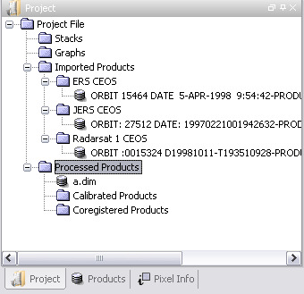

The Project View is a convenient tool for managing your data products.
A Project will help organize your data by storing all related work in one
folder. To create a project, select New Project from the File menu or Toolbar.
A dialog will prompt you for a project folder location and project file
name. By default a Project will be created with folders for ProductSets,
Graphs, External Product Links, Imported Products and Processed
Products.
Whenever you open a new product, a link to that product will show up
under External Product Links. When processing data, the output folder will
default to your project's Processed Products folder.
Within ProductSets, Graphs, Imported Products, Processed Products and any other user created
folder, the project folders mirror the file structure of the physical
hard disk. Therefore any change you make to the physical project
folders on disk will be reflected in your project.

Right click on a folder to create a new sub-folder, rename or remove a folder. Right click on a file to open or remove the file.
External Product Links
A Project can store links to other data related to your work including
data projects, orbit files, auxillary data, and DEMs. Files can be
dragged and dropped from a Project into an Operator dialog for
processing.Importing Products
Products
can be imported from the External Product Links or by using the Product Library tool. Imported products are converted to DIMAP format and saved
within your Project folder.
ProductSets
A Product Set is a list of products you would like to group to apply the same processing to them in a graph.
To create a product set, right click on the ProductSet folder and create a new
ProductSet. Drag and drop products from a project onto the table in
the ProductSet dialog. From the GraphBuilder use the ProductSet by adding a
ProductSetReader and dragging the ProductSet into its dialog. The dialog table should be populated with the list of
products in the ProductSet.
You may drag and drop a ProductSet into the Batch Processing tool to apply a graph to each of the products in the ProductSet.